Reading/Plotting the values of different parameter sets
ReadPlot_params.RdThis function reads a file containing different parameter sets and their corresponding goodness-of-fit values
The following values of file set default values for header, skip and param.cols:
-) modelpara.out, created by the GLUE algorithm of SWAT-CUP,
-) modelpara.beh, created by the GLUE algorithm of SWAT-CUP,
-) goal.sf2, created by the SUFI-2 algorithm of SWAT-CUP
-) goal.pso, created by the PSO algorithm of SWAT-CUP
-) ParameterValues.log, created by Nimbus calibration tool (Lisflood model)
header and skip are automatically set, in other case, they need to be provided
Usage
read_params(file, ...)
# Default S3 method
read_params(file, header=TRUE, skip=0, param.cols, param.names,
of.col=NULL, of.name="GoF", na.strings="-9999", plot=TRUE,
ptype=c("histogram", "dottyplot", "boxplot", "vioplot", "pairs"),
MinMax=NULL, beh.thr=NA, beh.col="red", beh.lty=1, beh.lwd=2,
nrows="auto", col="#00000030", ylab=of.name, main=NULL, pch=19,
cex=0.5, cex.main=1.5, cex.axis=1.5, cex.lab=1.5,
breaks="Scott", freq=TRUE, verbose=TRUE, ..., do.png=FALSE,
png.width=1500, png.height=900, png.res=90, png.fname="Parameters.png")
plot_params(params, ...)
# Default S3 method
plot_params(params, gofs=NULL,
ptype=c("histogram", "dottyplot", "boxplot", "vioplot", "pairs"),
param.cols=1:ncol(params), param.names=colnames(params), of.name="GoF",
MinMax=NULL, beh.thr=NA, beh.col="red", beh.lty=1, beh.lwd=2,
nrows="auto", col="#00000030", ylab=of.name, main=NULL, pch=19, cex=0.5,
cex.main=1.5, cex.axis=1.5, cex.lab=1.5, breaks="Scott", freq=TRUE,
verbose=TRUE, ..., do.png=FALSE, png.width=1500, png.height=900,
png.res=90, png.fname="Parameters.png")
# S3 method for class 'data.frame'
plot_params(params, gofs=NULL,
ptype=c("histogram", "dottyplot", "boxplot", "vioplot", "pairs"),
param.cols=1:ncol(params), param.names=colnames(params), of.name="GoF",
MinMax=NULL, beh.thr=NA, beh.col="red", beh.lty=1, beh.lwd=2,
nrows="auto", col="#00000030", ylab=of.name, main=NULL, pch=19, cex=0.5,
cex.main=1.5, cex.axis=1.5, cex.lab=1.5, breaks="Scott", freq=TRUE,
verbose=TRUE, ..., do.png=FALSE, png.width=1500, png.height=900,
png.res=90, png.fname="Parameters.png")
# S3 method for class 'matrix'
plot_params(params, gofs=NULL,
ptype=c("histogram", "dottyplot", "boxplot", "vioplot", "pairs"),
param.cols=1:ncol(params), param.names=colnames(params), of.name="GoF",
MinMax=NULL, beh.thr=NA, beh.col="red", beh.lty=1, beh.lwd=2,
nrows="auto", col="#00000030", ylab=of.name, main=NULL, pch=19, cex=0.5,
cex.main=1.5, cex.axis=1.5, cex.lab=1.5, breaks="Scott", freq=TRUE,
verbose=TRUE, ..., do.png=FALSE, png.width=1500, png.height=900,
png.res=90, png.fname="Parameters.png")Arguments
- file
character, name (including path) of the file containing the results
- params
data.frame whose rows represent the values of different parameter sets
- gofs
OPTIONAL. numeric with the values of goodness-of-fit values for each one of the parameters in
params(in the same order!)- header
logical, indicates whether the file contains the names of the variables as its first line
Iffileis in c('modelpara.out', 'modelpara.beh', 'goal.sf2', 'goal.pso', 'ParameterValues.log') thenheaderis automatically set- skip
numeric (integer), lines of the data file to skip before beginning to read data
Iffileis in c('modelpara.out', 'modelpara.beh', 'goal.sf2', 'goal.pso', 'ParameterValues.log') thenskipis automatically set- param.cols
numeric, number of the columns in
filethat store the values of each parameter- param.names
character, name of the parameters defined by
param.cols- of.col
OPTIONAL. numeric, number of the column in
filethat store the values of objective function- of.name
OPTIONAL. Only used when
of.colis provided.
character, name that will be given to the columnof.col- na.strings
character, string which is to be interpreted as NA values.
read.table- plot
logical, indicates if a dotty-plot with the parameter values versus the objective function has to be produced
- ptype
OPTIONAL. Only used when
plot=TRUE
.character, indicating the type of plot to be done. It must be in:
-) dottyplot: dotty plots for each parameter in
paramsorfile, with the value of the objective function against the parameter value .-) histogram: histogram for each parameter in
paramsorfile, with an estimate of the probability distribution each parameter.-) boxplot: box plots (or box-and-whisker diagram) for each parameter in
paramsorfile, with a graphical summary of the distribution of each parameter, through their five-number summary.-) vioplot: beanplots for each parameter in
paramsorfile, similar to the boxplots, except that beanplots also show the probability density of the data at different values. Seevioplot. It requires the vioplot package.-) pairs: Visualization of a correlation matrix among the parameters and goodness-of-fit values in
params(orfile) andgofs). Seehydropairs. It requires the hydroTSM package.- MinMax
OPTIONAL
character, indicates whether the optimum value inparamscorresponds to the minimum or maximum of the the objective function given inof.col. It is used to filter out model outputs with a non-acceptable performance
Valid values are in:c('min', 'max')- beh.thr
OPTIONAL
numeric, threshold value used for selecting parameter sets that have to be used in the analysis (‘behavioural parameters’, using the GLUE terminology)
IfMinMax='min', only parameter sets with a goodness-of-fit value (given bygofs) less than or equal tobeh.thrwill be considered for the subsequent analysis.
IfMinMax='max', only parameter sets with a goodness-of-fit value (given bygofs) greater than or equal tobeh.thrwill be considered for the subsequent analysis- beh.col
OPTIONAL. Only used when
plot=TRUE
character, colour for drawing a horizontal line for separating behavioural from non behavioural parameter sets- beh.lty
OPTIONAL. Only used when
plot=TRUE
numeric, line type for drawing a horizontal line for separating behavioural from non behavioural parameter sets- beh.lwd
OPTIONAL. Only used when
plot=TRUE
numeric, width for drawing a horizontal line for separating behavioural from non behavioural parameter sets- nrows
OPTIONAL. Only used when
plot=TRUE
numeric, number of rows to be used in the plotting window
Ifnrowsis set to auto, the number of rows is automatically computed depending on the number of columns ofparams- col
OPTIONAL. Only used when
plot=TRUE
character, colour to be used for drawing the points of the dotty plots- ylab
OPTIONAL. Only used when
plot=TRUE
character, label for the 'y' axis- main
chracter, title for the plot
- pch
OPTIONAL. Only used when
plot=TRUE
numeric, type of symbol to be used for drawing the points of the dotty plots (e.g., 1: white circle)- cex
OPTIONAL. Only used when
plot=TRUE
numeric, values controlling the size of text and points with respect to the default- cex.main
OPTIONAL. Only used when
plot=TRUE
numeric, magnification for the main title relative to the current setting ofcex- cex.axis
OPTIONAL. Only used when
plot=TRUE
numeric, magnification for axis annotation relative to the current setting ofcex- cex.lab
OPTIONAL. Only used when
plot=TRUE
numeric, magnification for x and y labels relative to the current setting ofcex- breaks
breaks used for plotting the histograms of the parameter sets. See
hist- freq
logical, if TRUE, the histogram graphic is a representation of frequencies, the counts component of the result; if FALSE, probability densities, component density, are plotted (so that the histogram has a total area of one). See
hist- verbose
logical, if TRUE, progress messages are printed
- ...
OPTIONAL. Only used when
plot=TRUE
further arguments passed to the plot command or from other methods- do.png
logical, indicates if the plot with the convergence measures has to be saved into a PNG file instead of the screen device
- png.width
OPTIONAL. Only used when
do.png=TRUE
numeric, width of the device. Seepng- png.height
OPTIONAL. Only used when
do.png=TRUE
numeric, height of the device. Seepng- png.res
OPTIONAL. Only used when
do.png=TRUE
numeric, nominal resolution in ppi which will be recorded in the PNG file, if a positive integer of the device. Seepng- png.fname
OPTIONAL. Only used when
do.png=TRUE
character, name of the output PNG file. Seepng
Value
A list with the following elements:
- params
data.frame with the parameter sets tested during the optimisation
- gofs
numeric with the fitness values computed during the optimisation (each element in 'gofs' corresponds to one row of 'params')
Author
Mauricio Zambrano-Bigiarini, mzb.devel@gmail.com
Examples
# \donttest{
local({
# Setting the user temporal directory as working directory
oldwd <- getwd()
on.exit(setwd(oldwd), add = TRUE)
setwd(tempdir())
# Number of dimensions of the optimisation problem
D <- 4
# Boundaries of the search space (Sphere function)
lower <- rep(-100, D)
upper <- rep(100, D)
# Setting the seed
set.seed(100)
# Runing PSO with the 'sphere' test function, writing the results to text files
hydroPSO(fn=sphere, lower=lower, upper=upper,
control=list(maxit=100, write2disk=TRUE, plot=TRUE) )
# 1) reading ALL the parameter sets used in PSO, and histograms (by default)
params <- read_params(file="./PSO.out/Particles.txt", param.cols=4:7, of.col=3)
# 2) summary of the parameter sets and their goodness-
# plotting the parameter sets as dotty plots
plot_params(params=params[["params"]], gofs=params[["gofs"]],
ptype="dottyplot", main="Dottyplots for Sphere function", MinMax="min", freq=TRUE)
# plotting the parameter sets as boxplots
plot_params(params=params[["params"]], ptype="boxplot", MinMax="min")
# plotting the parameter sets as violing plots
plot_params(params=params[["params"]], ptype="vioplot", MinMax="min")
# 2) reading only the parameter sets with a goodness-of-fit measure <= 'beh.thr',
# and dotty plots (by default)
params <- read_params(file="./PSO.out/Particles.txt", param.cols=4:7, of.col=3,
beh.thr=1000, MinMax="min")
}) # local END
#>
#> ================================================================================
#> [ Initialising ... ]
#> ================================================================================
#>
#> [npart=40 ; maxit=100 ; method=spso2011 ; topology=random ; boundary.wall=absorbing2011]
#>
#> [ user-definitions in control: maxit=100 ; write2disk=TRUE ; plot=TRUE ]
#>
#>
#> ================================================================================
#> [ Writing the 'PSO_logfile.txt' file ... ]
#> ================================================================================
#>
#> ================================================================================
#> [ Running PSO ... ]
#> ================================================================================
#>


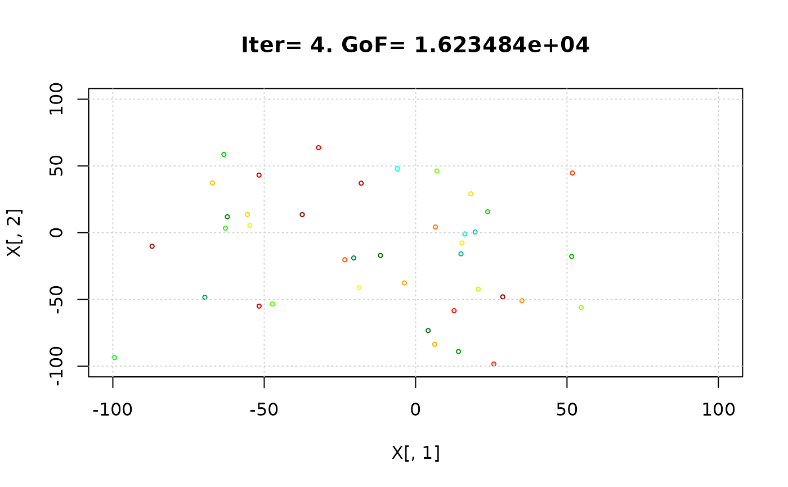
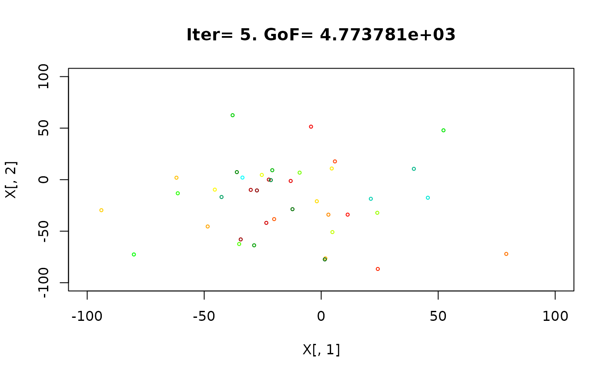


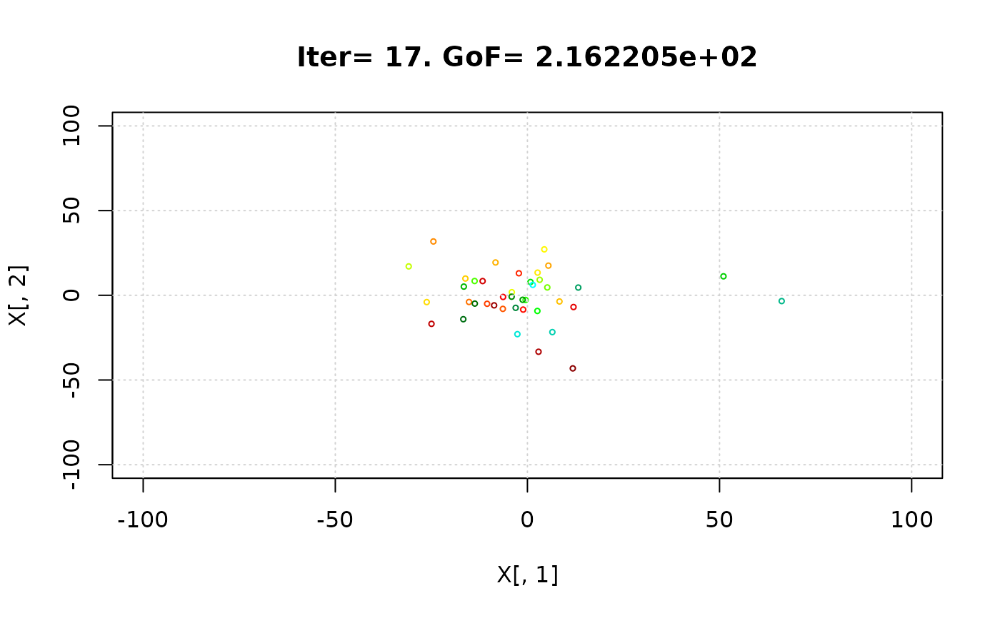


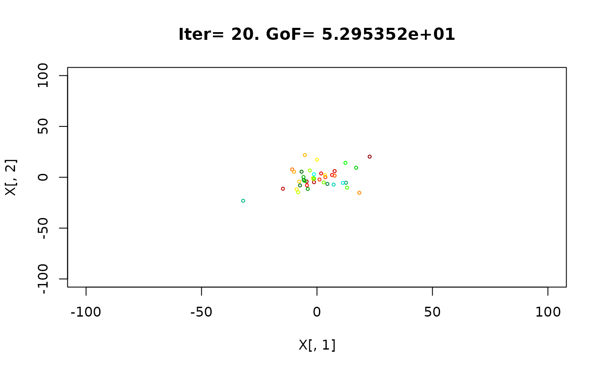


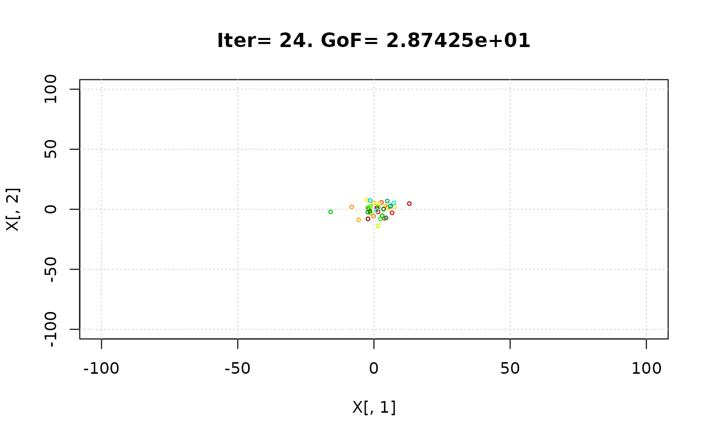


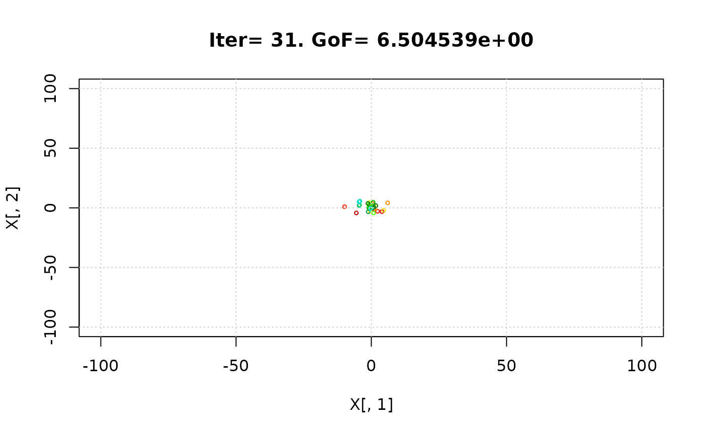


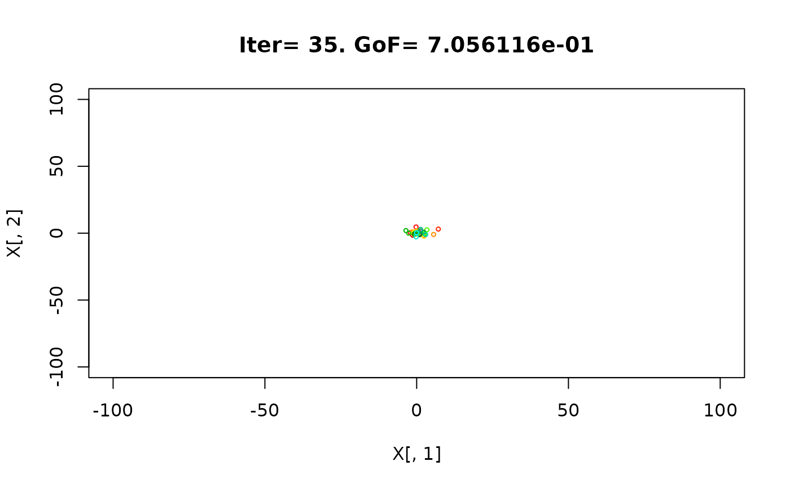


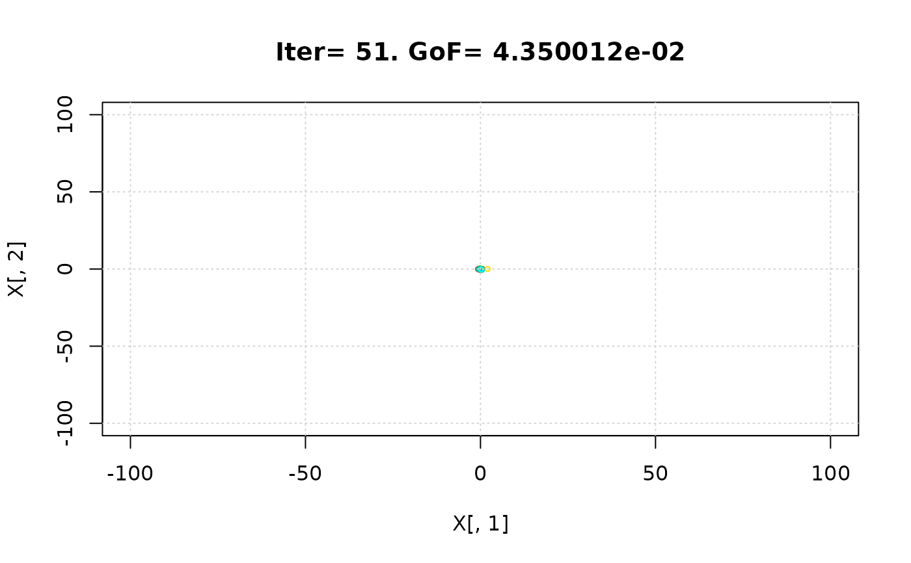


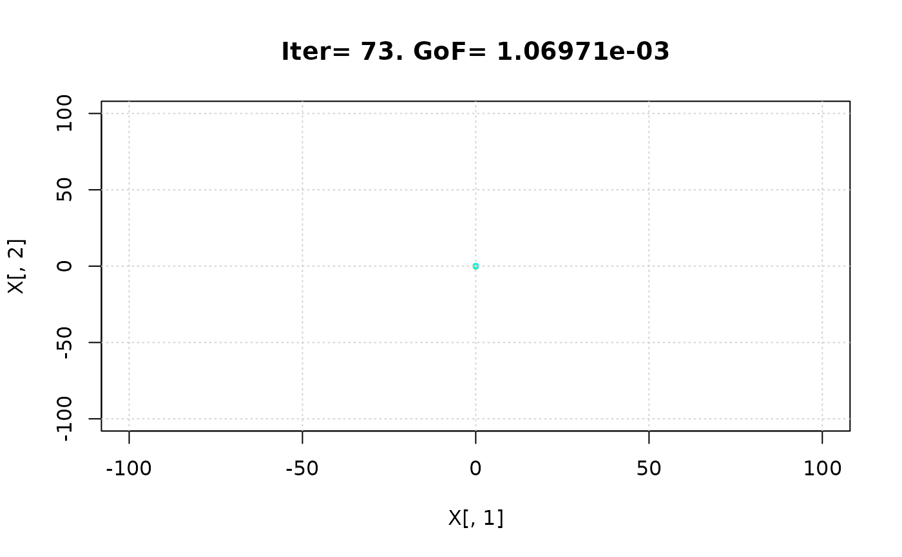


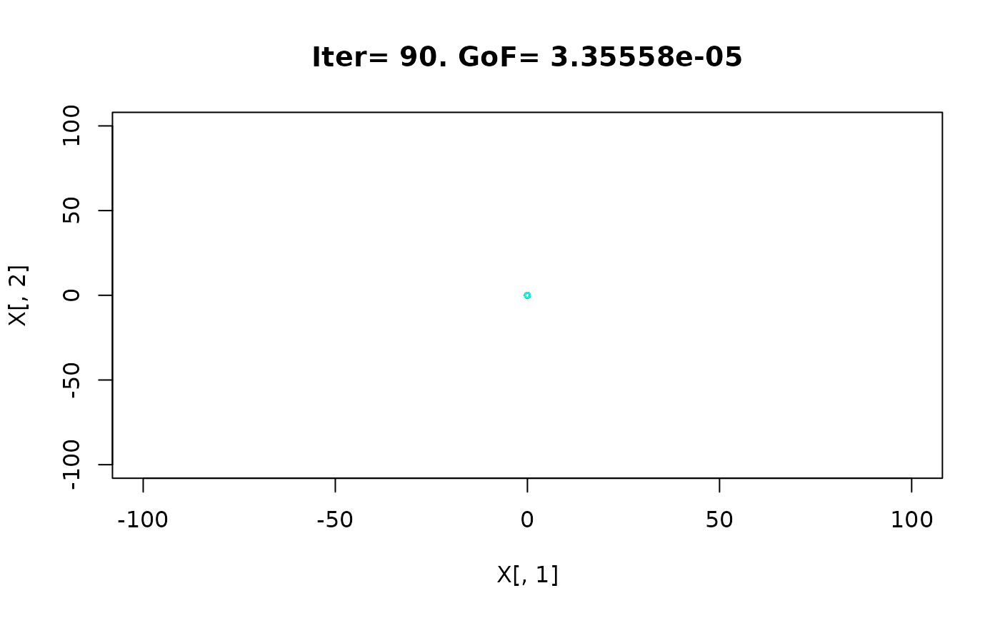


 #> iter:100 Gbest: 6.143E-08 Gbest_rate: 66.13% Iter_best_fit: 6.143E-08 nSwarm_Radius: 3.14E-06 |g-mean(p)|/mean(p): 98.08%
#>
#> [ Writing output files... ]
#>
#> |
#> ================================================================================
#> [ Creating the R output ... ]
#> ================================================================================
#>
#> [ Reading the file 'Particles.txt' ... ]
#> [ Total number of parameter sets: 4000 ]
#>
#> [ Plotting ... ]
#> iter:100 Gbest: 6.143E-08 Gbest_rate: 66.13% Iter_best_fit: 6.143E-08 nSwarm_Radius: 3.14E-06 |g-mean(p)|/mean(p): 98.08%
#>
#> [ Writing output files... ]
#>
#> |
#> ================================================================================
#> [ Creating the R output ... ]
#> ================================================================================
#>
#> [ Reading the file 'Particles.txt' ... ]
#> [ Total number of parameter sets: 4000 ]
#>
#> [ Plotting ... ]
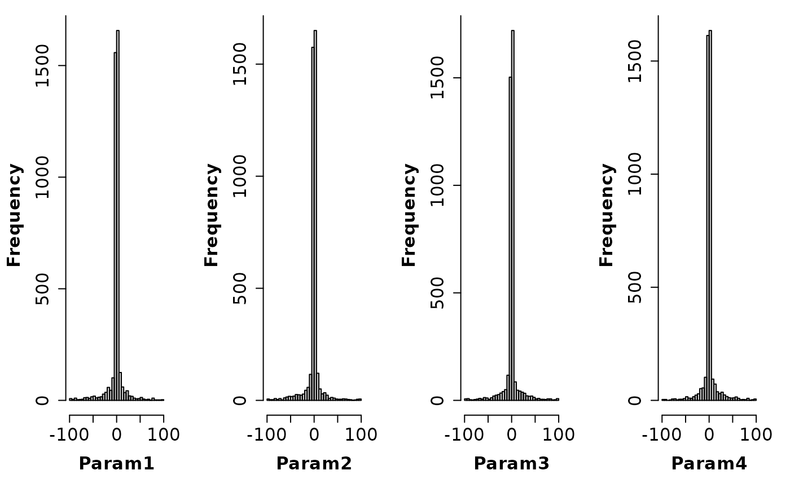
#>
#> [ Plotting ... ]
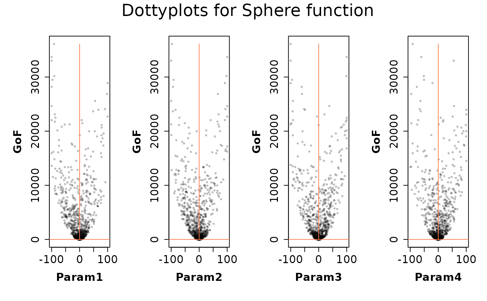
#>
#> [ Plotting ... ]
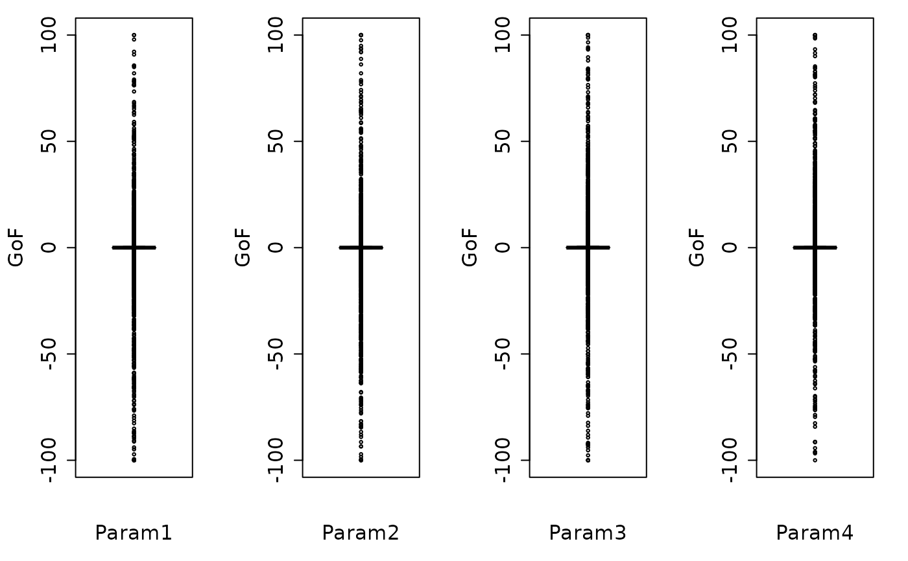
#>
#> [ Plotting ... ]
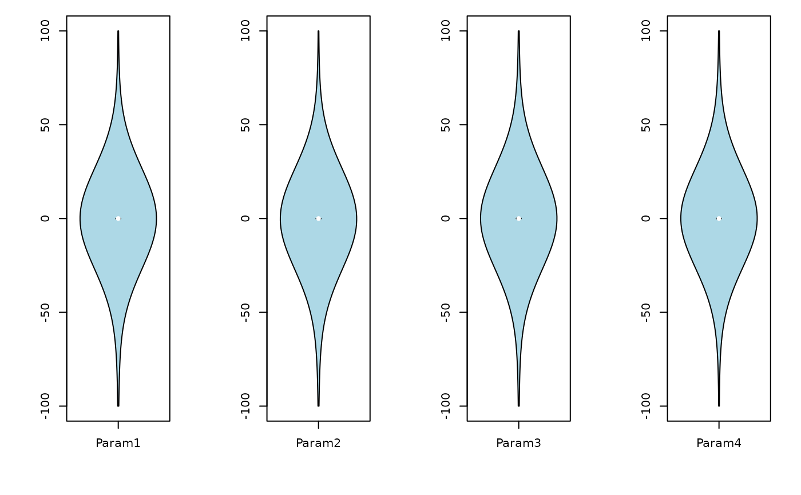
#>
#> [ Reading the file 'Particles.txt' ... ]
#> [ Total number of parameter sets: 4000 ]
#> [ Number of behavioural parameter sets: 3442 ]
#>
#> [ Plotting ... ]
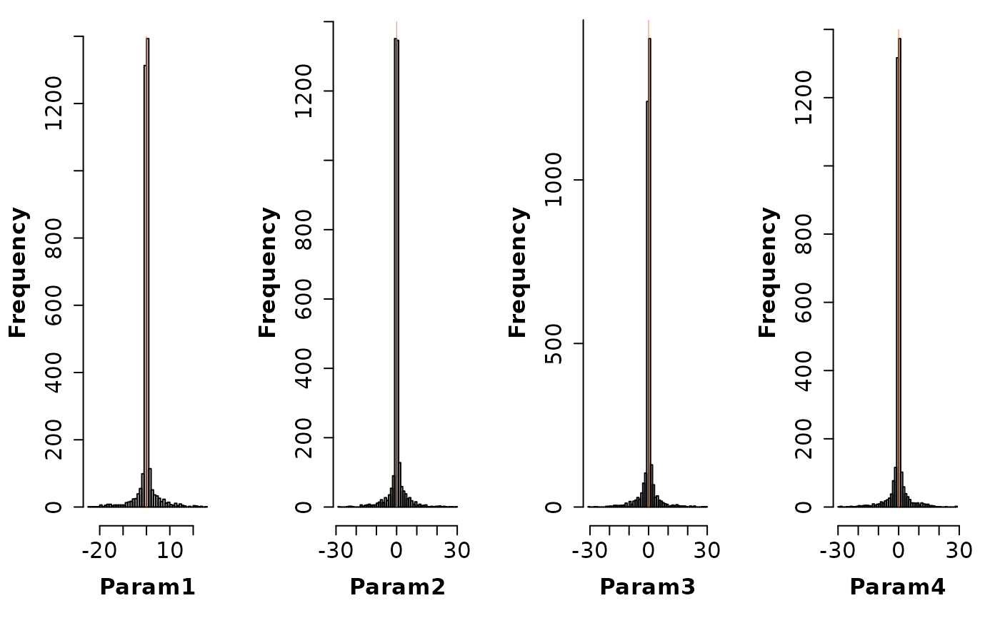
# } # donttest END